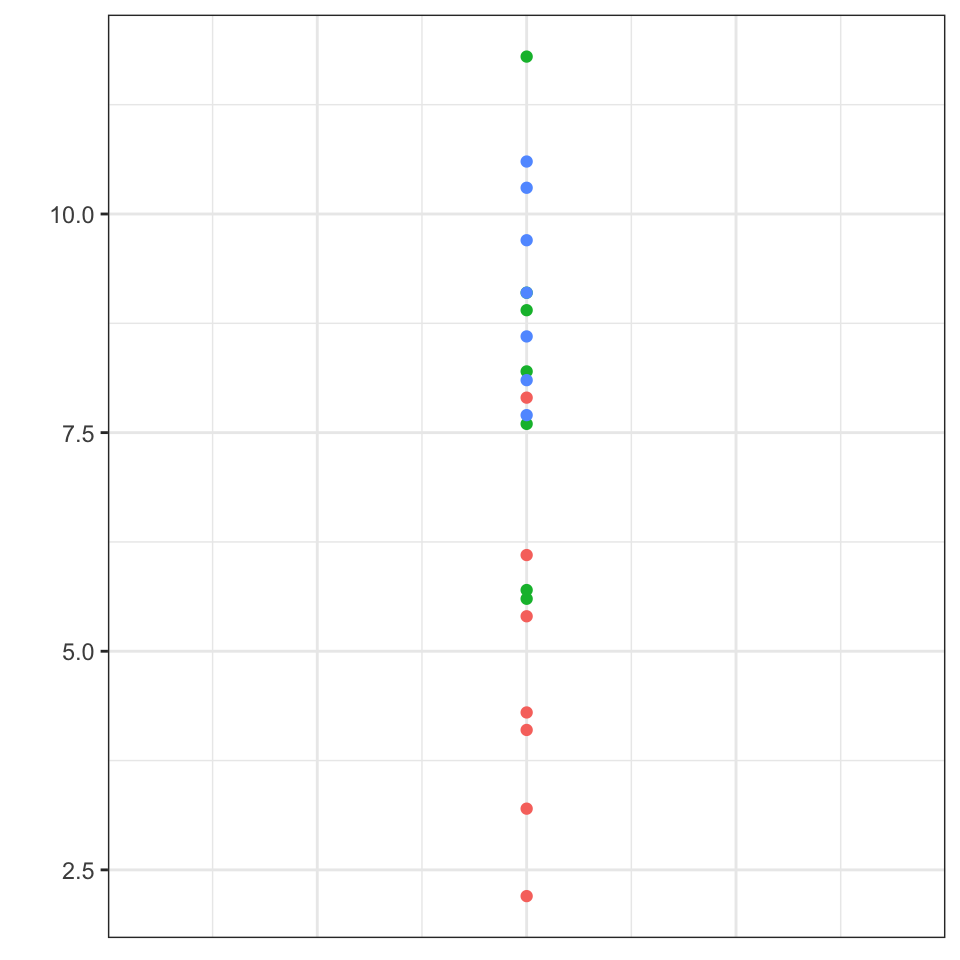
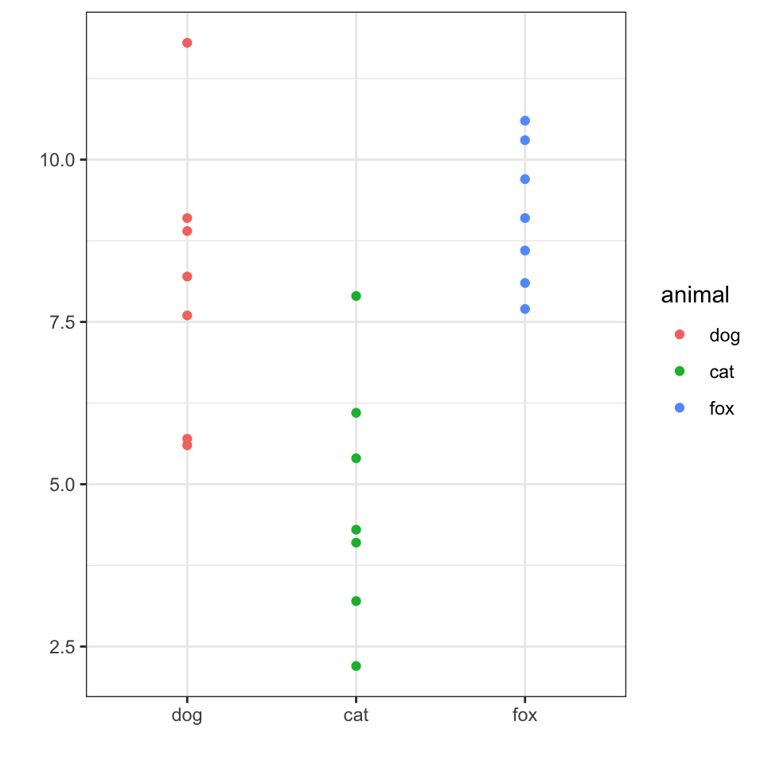
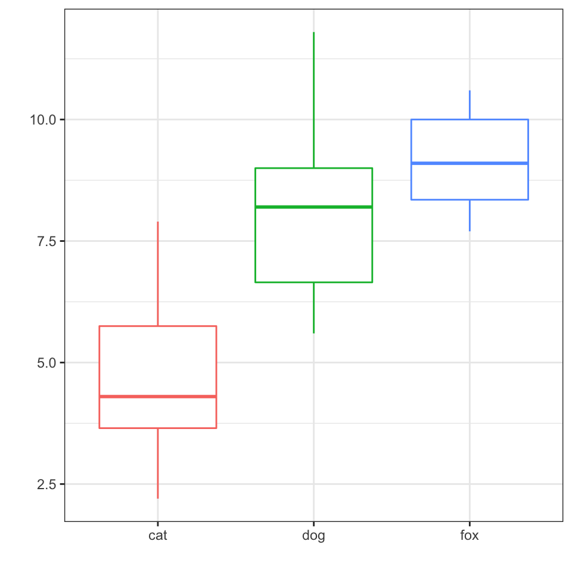

17 Die ANOVA
Du findest auf YouTube Grundlagen in R als Video Reihe. Ich werde zwar alles nochmal hier als Text aufschreiben, aber manchmal ist das Sehen und Hören dann einfacher.
Text was die ANOVA macht
Die ANOVA vergleicht die Parameter mehrerer Normalverteilungen miteinander.
Die Parameter einer Normalverteilung sind der Mittelwert und die Standardabweichung.
\(\mathcal{N}(0, 1)\)
Wir rechnen keine ANOVA in der Klausur per Hand sondern interpretieren die Ausgabe der R Fnktionen einer einfaktoriellen oder zweifaktoriellen ANOVA.
17.1 Genutzte R Pakete für das Kapitel
Wir wollen folgende R Pakete in diesem Kapitel nutzen.
pacman::p_load(tidyverse, magrittr, broom, readxl, effectsize)Am Ende des Kapitels findest du nochmal den gesamten R Code in einem Rutsch zum selber durchführen oder aber kopieren.
17.2 Einfaktorielle ANOVA
| animal | jump_length | flea_count | grade | infected |
|---|---|---|---|---|
| dog | 5.7 | 18 | 8 | 0 |
| dog | 8.9 | 22 | 8 | 1 |
| dog | 11.8 | 17 | 6 | 1 |
| dog | 8.2 | 12 | 8 | 0 |
| dog | 5.6 | 23 | 7 | 1 |
| dog | 9.1 | 18 | 7 | 0 |
| dog | 7.6 | 21 | 9 | 0 |
| cat | 3.2 | 12 | 7 | 1 |
| cat | 2.2 | 13 | 5 | 0 |
| cat | 5.4 | 11 | 7 | 0 |
| cat | 4.1 | 12 | 6 | 0 |
| cat | 4.3 | 16 | 6 | 1 |
| cat | 7.9 | 9 | 6 | 0 |
| cat | 6.1 | 7 | 5 | 0 |
| fox | 12.1 | 21 | 5 | 1 |
| fox | 13.2 | 25 | 4 | 1 |
| fox | 14.1 | 31 | 4 | 1 |
| fox | 9.7 | 12 | 5 | 1 |
| fox | 10.6 | 28 | 4 | 0 |
| fox | 11.5 | 18 | 4 | 1 |
| fox | 10.8 | 19 | 3 | 0 |




Warning: `fun.y` is deprecated. Use `fun` instead.


Beispieldaten sind in Tabelle 17.1 abgebildet.

fit_1 <- lm(jump_length ~ animal, data = fac1_tbl) %>%
anova
fit_1Analysis of Variance Table
Response: jump_length
Df Sum Sq Mean Sq F value Pr(>F)
animal 2 170.149 85.0748 24.1081 0.0000081054 ***
Residuals 18 63.520 3.5289
---
Signif. codes: 0 '***' 0.001 '**' 0.01 '*' 0.05 '.' 0.1 ' ' 1fit_1 %>% eta_squaredFor one-way between subjects designs, partial eta squared is equivalent to eta squared.
Returning eta squared.# Effect Size for ANOVA
Parameter | Eta2 | 95% CI
-------------------------------
animal | 0.73 | [0.50, 1.00]
- One-sided CIs: upper bound fixed at (1).17.3 Zweifaktorielle ANOVA
Beispieldaten sind in Abbildung 17.8 abgebildet.

fit_2 <- lm(jump_length ~ animal + site, data = fac2_tbl) %>%
anova
fit_2Analysis of Variance Table
Response: jump_length
Df Sum Sq Mean Sq F value Pr(>F)
animal 2 180.033 90.0165 19.88083 0.000000039196 ***
site 3 9.126 3.0419 0.67183 0.57104
Residuals 114 516.170 4.5278
---
Signif. codes: 0 '***' 0.001 '**' 0.01 '*' 0.05 '.' 0.1 ' ' 1fit_2 %>% eta_squared# Effect Size for ANOVA (Type I)
Parameter | Eta2 (partial) | 95% CI
-----------------------------------------
animal | 0.26 | [0.15, 1.00]
site | 0.02 | [0.00, 1.00]
- One-sided CIs: upper bound fixed at (1).Warning: `fun.y` is deprecated. Use `fun` instead.
`fun.y` is deprecated. Use `fun` instead.
fit_3 <- lm(jump_length ~ animal + site + animal:site, data = fac2_tbl) %>%
anova
fit_3Analysis of Variance Table
Response: jump_length
Df Sum Sq Mean Sq F value Pr(>F)
animal 2 180.033 90.0165 30.28074 0.000000000036302 ***
site 3 9.126 3.0419 1.02327 0.38536
animal:site 6 195.115 32.5191 10.93914 0.000000001709866 ***
Residuals 108 321.055 2.9727
---
Signif. codes: 0 '***' 0.001 '**' 0.01 '*' 0.05 '.' 0.1 ' ' 1fit_3 %>% eta_squared# Effect Size for ANOVA (Type I)
Parameter | Eta2 (partial) | 95% CI
-------------------------------------------
animal | 0.36 | [0.24, 1.00]
site | 0.03 | [0.00, 1.00]
animal:site | 0.38 | [0.24, 1.00]
- One-sided CIs: upper bound fixed at (1).